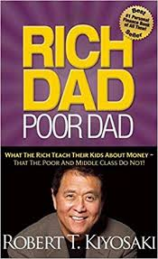

by Paulo Coelho (Goodreads Author),
Alan R. Clarke (Translator),
James Noel Smith (Illustrator)
Ratings
Paulo Coelho's enchanting novel has inspired a devoted following around the world. This story, dazzling in its powerful simplicity and soul-stirring wisdom, is about an Andalusian shepherd boy named Santiago who travels from his homeland in Spain to the Egyptian desert in search of a treasure buried near the Pyramids.No one knows what the treasure is, or if Santiago will be able to surmount the obstacles in his path. But what starts out as a journey to find worldly goods turns into a discovery of the treasure found within. Lush, evocative, and deeply humane, the story of Santiago is an eternal testament to the transforming power of our dreams and the importance of listening to our hearts.

BLOG ENTRY
Title description, April 2, 2014
Mauris neque quam, fermentum ut nisl vitae, convallis maximus nisl. Sed mattis nunc id lorem euismod placerat. Vivamus porttitor magna enim, ac accumsan tortor cursus at. Phasellus sed ultricies mi non congue ullam corper. Praesent tincidunt sed tellus ut rutrum. Sed vitae justo condimentum, porta lectus vitae, ultricies congue gravida diam non fringilla.
Paulo Coelho - Author
The Brazilian author PAULO COELHO was born in 1947 in the city of Rio de Janeiro. Before dedicating his life completely to literature, he worked as theatre director and actor, lyricist and journalist. In 1986, PAULO COELHO did the pilgrimage to Saint James of Compostella, an experience later to be documented in his book The Pilgrimage. In the following year, COELHO published The Alchemist.
Suggestions for you
-
 The subtle art of not giving F*ck
The subtle art of not giving F*ck
Mark Manson -
The Magic of thinking Big
David Swartz -

Rich dad poor Dad
Robert T. Kiyosaki
Tags
Travel New York London IKEA NORWAY DIY Ideas Baby Family News Clothing Shopping Sports Games